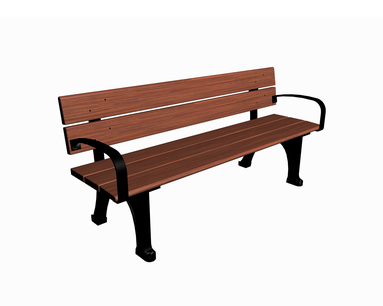

Скамейка садовая деревянная с ковкой Мадрид 1.6, 160х55х90 см

Описание товара
Скамья из дерева и металла
Характеристики товара
- Материал: сосна, сталь.
- Вес: 23 кг
- Габариты (мм) ДхШхВ: 1600 х 550 х 900 мм
Подробное описание товара
Прочная и устойчивая скамейка из натуральной древесины и металла — один из важнейших атрибутов любого садового или дачного участка.
Особенности
Устойчива к погодным условиям
Все права защищены © 2023 | ze_r0m